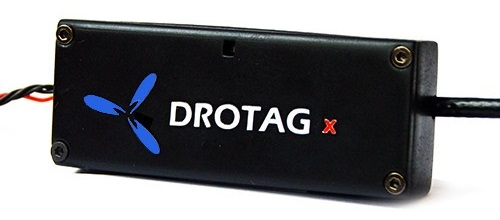

DROTAG x for Geotagging¶
DROTAGx makes geo-tagging easy by recording the vehicle’s position directly into the images on the camera.
Images are geotagged with the vehicle’s Latitude, Longitude and Altitude (above sea level) at the moment the photo was taken. These value can be viewed with any EXIF viewer
Two text files are also created which include the image name, lat, lon, alt above home, altitude above sea level, roll, pitch and yaw
Captures picture every 1.6 seconds
Includes a Hotshoe which connects between the autopilot and your camera’s flash to improve the accuracy of the geo-tagging
More details can be found in the official DrotagX manual (web, pdf) including pre-flight checklists, detailed explanations for diagnosis and other tips.
Setup, Configuration¶
Connect the Drotag’s 6-pin JST connector to one of the autopilot’s serial ports
Connect the micro USB connector to the Sony camera’s “MultiPort”
Set the following parameters in ArduPilot (assuming the Drotag is connect to Serial port 1) and then reboot the autopilot
SERIAL1_BAUD: 115
Turn on the camera
Power the autopilot and Drotag
If all goes well the following will happen:
Drotag’s red LED should blink twice quickly about once per second
The camera should switch to “mass storage” for about 30 seconds (or less) and then return to regular shooting mode
If a MAVLink Inspector is used (available in MissionPlanner and QGC) a “Component 2” should appear and send heartbeats once every 3 seconds
{kind=link}
Testing¶
Test the Drotag is working correctly by doing the following
Connect with Mission Planner and right-mouse-button-clicking on the map and select, “Trigger Camera Now”. The camera should emit a click as it takes a picture. Normally a green circle will also appear on the map.
Arm the vehicle, trigger another picture, then disarm the vehicle. The camera should momentarily switch to “Mass Storage” mode as Drotag geotags the images and writes the text files
{kind=link}
Retrieving Geotagged Images¶
Drotag writes the location information directly into the .jpg images files using EXIF and also into two accompanying files on the camera’s SD card
Connect the camera’s USB port to your PC or remove the SD card and download to your PC
The location can be viewed with any EXIF viewer including Window’s file property viewer
{kind=link}
The PIX4D_xxxx.txt includes the image’s lat, lon, alt, roll, pitch and yaw information as shown below
DSC00027.JPG,36.3242995,138.6392682,938.0399780,0.3200000,0.1200000,-24.9599991
The tagging_xxxx.log file has the following information
{ filename: "DSC00027.JPG", time: 1571822099701000, latitude: 363242995, longitude: 1386392682, alt_msl: 938.039978, alt_rel: -0.310000, roll: 0.320000, pitch: -0.120000, yaw: 24.959999, }
[copywiki destination=”copter,plane,rover”]